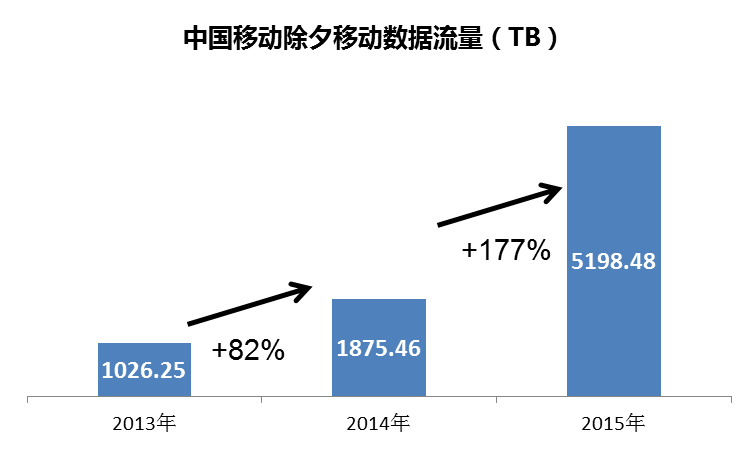
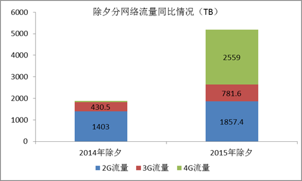

工信部发布春节通信数据，春节假期7天内，全国移动短信发送量累计达到
203.9亿条
。移动电话去话通话时长累计完成
768.6亿分钟
。除夕当日, 短信发送量
82.9亿条
，同比
下降25%
，移动数据流量
725.5万G
，同比
增长69.5%。
基于经分数据分析中国移动春节业务量，同样表现为传统业务量降低，流量业务激增。话务量方面，除夕当日语音计费时长达到
94亿分钟
，同比
下降6.4%
；春节7天整体较去年同期呈下降趋势，仅在初六高于去年并达到峰值
104.5亿分钟
；除夕和初一的长途语音时长显著提升，除夕当日长途计费时长占比达到
7.2%。
短信业务方面，除夕当日短信计费量达到
64亿条，同比
下降23%
（中国电信除夕峰值业务量同比下降32%）；除夕当天为全年峰值，是平时业务量的
6倍
左右，初二后逐渐回落到平时水平。初二到初六的短信计费量同比平稳。
数据业务方面，除夕当日移动数据流量达到
5198TB
，同比
增长177%
（中国电信C网数据峰值业务量同比增长20.55%，中国联通数据流量除夕达到1618TB）；分网络看，流量提升源自4G业务的快速增长，除夕当日的4G流量达到
2559.4TB
，占当日流量的
49.2%
。3G流量达到
781.6TB
，同比
增长82%。

